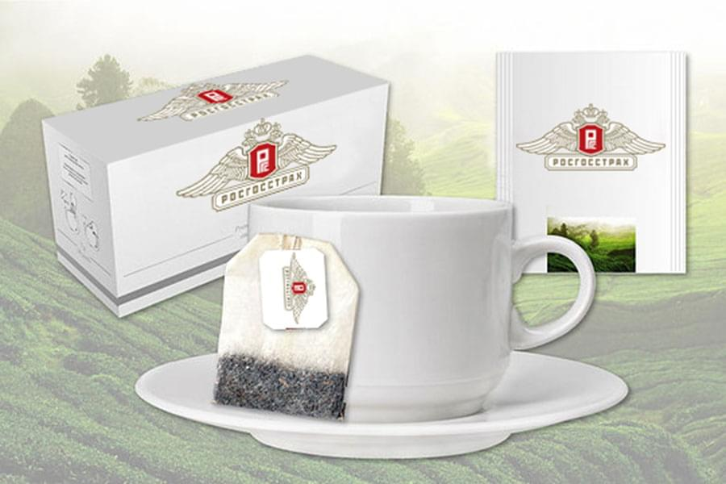
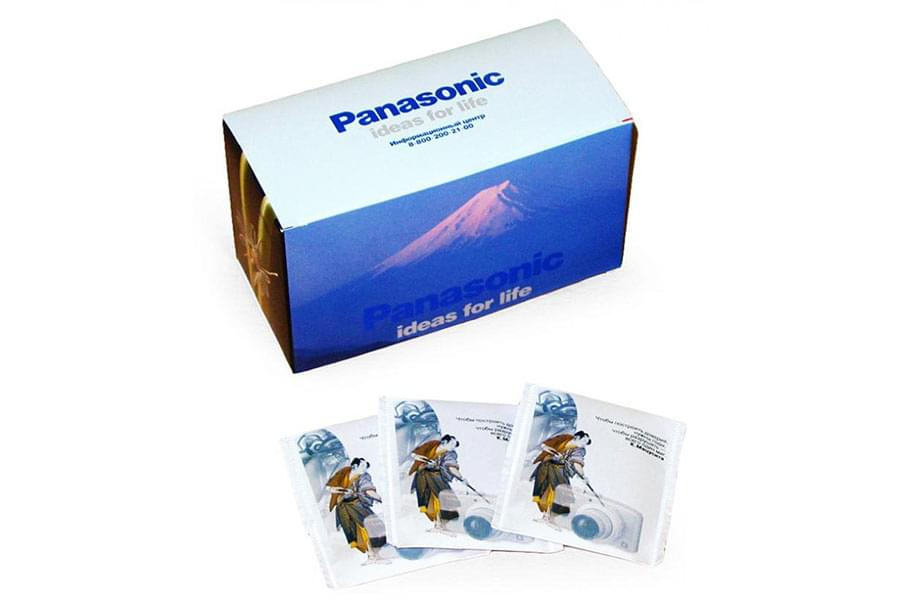

<!--#set var="title" value="Производство брендированного чая • НекстПринт" -->
<!--#include virtual="/parts/header.html" -->
    <section class="brand">
        <div class="container">
            <div class="title title_brand"><h3>Производство брендированного чая</h3></div>
			<div class="swiper-container mySwiper">
				<div class="swiper-wrapper">
				  <div class="swiper-slide">
					<a data-fancybox="gallery" data-src="images/dist/Rosgosstrah_900x600.jpg">
						
					</a>
				  </div>
				  <div class="swiper-slide">
					<a data-fancybox="gallery" data-src="images/dist/brend_tea_900x600.jpg">
						
					</a>
				  </div>
				  <div class="swiper-slide">
					<a data-fancybox="gallery" data-src="images/dist/panasonic_900x600.jpg">
						
					</a>
				  </div>
				</div>
				<div class="swiper-pagination"></div>
				<div class="swiper-button-prev"></div>
  				<div class="swiper-button-next"></div>
			</div>
            <p>
                Имидж компании в основном зависит от переговоров, которые проходят среди руководителей высшего звена. А сопутствующая составляющая любых переговоров, это стол сервированный под чаепитие. Если вы предложите своим бизнес-партнерам не просто чай известных марок, а упаковку чая, на которой изображен логотип вашей компании, то это вызовет неподдельный интерес со стороны партнеров. Чай с логотипом заказчика – нестандартный способ провести рекламную акцию, которая обязательно произведет должный эффект и гарантирует успех PR-кампании, резко повысит Ваш статус среди конкурентов.
            </p>
            <p>
                Компания <strong>“Некст Принт”</strong> предлагает Вам изготовление чая или любой другой продукции с логотипом Вашей компании. Ведь <strong>производство брендированной продукции</strong> – одно из основных направлений работы компании “Некст Принт”.
            </p>
        </div> 
    </section>
<!--#include virtual="/parts/consultation.html" -->
<!--#include virtual="/parts/footer.html" -->